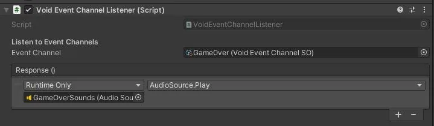
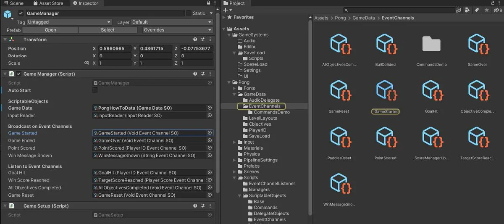
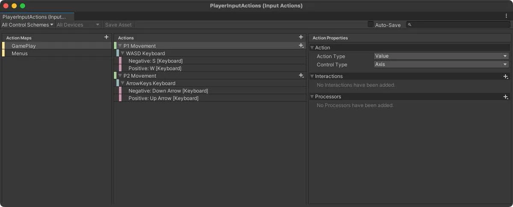
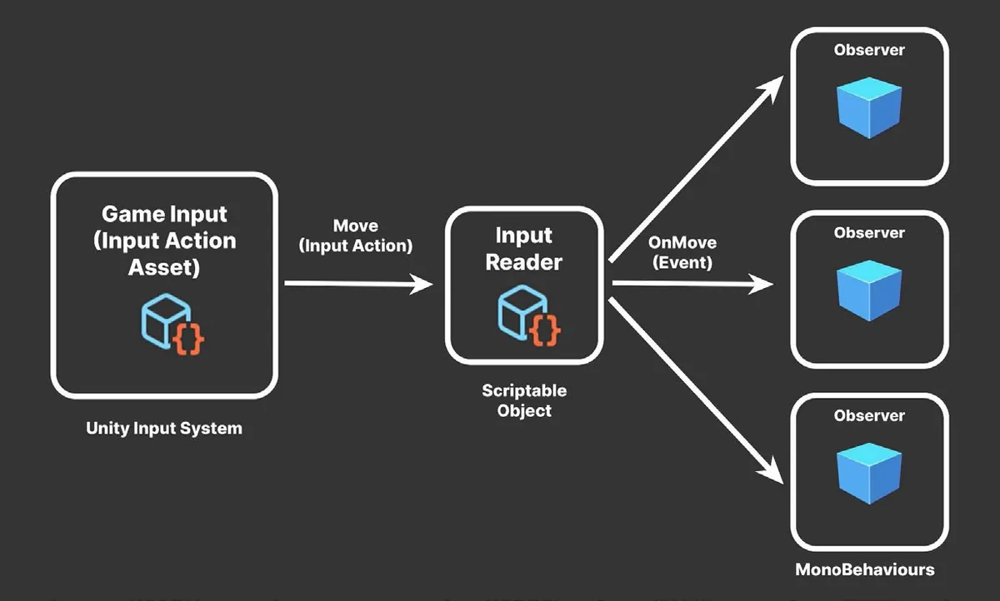

由于基于 ScriptableObject 的事件属于项目级资源，因此它们可以驱动应用程序的许多基础设施。这在为支撑游戏架构的不同系统之间传递消息时尤其有用。
一些常见的管理系统包括：
- 音频管理（Audio management）：游戏中的许多东西都可以触发声音。该系统可以响应应用程序事件来播放 AudioClip，或调整 AudioMixer。
- 场景管理（Scene management）：该系统负责 Unity 场景与游戏关卡的加载和卸载。
- UI 管理（UI management）：它负责游戏玩法之前、之中和/或之后的菜单界面。
- 存档数据管理（Save Data management）：它负责保存和加载游戏数据，以及将设置写入文件系统。
这些系统各自专精于不同的任务，但它们需要相互通信。事件可以成为把它们连接起来的黏合剂。
请浏览随附的示例项目，了解更多关于实现自己的基于 ScriptableObject 的事件的示例。

请注意，你可以借助不同的事件负载（payload），让每个事件携带不同类型的数据。例如，基于 ScriptableObject 的事件包括 IntEventChannelSO、Vector2EventChannelSO、VoidEventChannelsSO 等。使用哪一种事件取决于具体场景。
你可以根据游戏玩法定制额外的事件类型。例如，伤害事件可能需要传递伤害由谁造成，以及造成了多少伤害。
如何部署这些事件通道，只受你的创造力限制。除了上述核心系统之外，事件往往还能帮助连接非常不同的游戏内系统，使它们能够交互：
- 相机（Cameras）：用于控制玩家对游戏世界的视角，并可加入戏剧化或电影化的效果，例如震动或切换到不同视角。
- 任务（Quests）：玩家为了在游戏中推进或获得奖励而必须完成的任务或目标。任务往往涉及多种玩法元素，例如收集物品、击败敌人或解开谜题。
- 生命值（Health）：这是许多游戏中的重要部分，它把玩家、敌人，以及任何能够对玩家造成伤害的对象或行为连接起来。
- 成就（Achievements）：与任务类似，是玩家通过完成游戏内某些任务或目标而解锁的特殊奖励。成就可以跨越不同的玩法元素，例如达到某个等级或累计一定数量的分数。
而这些玩法元素又会通过事件与其他管理系统（如音频、UI 和存档数据）交互。这种做法提升了架构中每个组件的模块化程度与独立性，同时仍然允许它们与其他系统通信。
调试事件通道
自定义编辑器（Editor）或属性绘制器（Property Drawer）可以在 Inspector 中创建一个 "Raise Event" 按钮。这有助于你手动调用事件以进行调试。
例如，下面是一个基础编辑器脚本，它为 VoidEventChannelSO 创建了一个自定义的 Inspector 按钮：
[CustomEditor(typeof(VoidEventChannelSO))]
public class VoidEventChannelSOEditor : Editor
{
public override void OnInspectorGUI()
{
DrawDefaultInspector();
VoidEventChannelSO eventChannel = (VoidEventChannelSO)target;
if (GUILayout.Button("Raise Event"))
{
eventChannel.RaiseEvent();
}
}
}这会创建一个按钮，让你可以随意触发该事件，从而更容易在运行时诊断问题。

再多做一点工作，你还可以为携带数据的事件通道制作按钮。在事件通道本身中预留一个用于调试值的字段，然后把它传给编辑器脚本。你可以在 SOAP 或 Unity Atoms 项目中找到实现这一功能的示例。
当你继续使用事件通道来解耦对象时，可以考虑开发一些调试工具，例如为每个事件记录所有监听者。事件通道类可以提供添加和移除订阅对象的方法，从而更容易在运行时找出是哪些事件导致了特定行为。
示例：InputReader
监听用户输入的对象需要一种特殊类型的事件通道。Unity 的 Input System 使用 InputAction 把原始输入数据表示为逻辑概念（例如跳跃、行走等）。
而每个 InputAction 又包含自己的 started、performed 和 canceled 事件。

为了解读 InputAction 的绑定，你可以创建一个特殊的 InputReader ScriptableObject。同样，它充当主体（subject）与观察者（observer）之间的中介。不过在这种情况下，MonoBehaviour 不会显式地触发事件。
取而代之的是，由 Input System 来充当主体或广播者：

在这里，我们在 Input System 中设置 Action 和 ActionMap。每个 InputAction 描述一条独立的输入轴，并绑定到键盘、手柄或其他输入设备。
桨板控制器（paddle controllers）并不直接订阅 InputAction 本身，而是分别监听 OnMoveP1.performed 和 OnMoveP2.performed 事件。
InputReader 使对象与输入之间不再存在直接依赖。
由此得到的 InputReader 统一了 GameObject 处理手柄或键盘操作的方式。任何需要输入的对象都要：
- 持有对 InputReader ScriptableObject 的引用；
- 订阅相关事件，并连接自己的事件处理方法。
虽然对于一款极简的街机游戏来说，这种模式可能有些大材小用，但我们仍在一个简单项目中演示它，以便让整体结构更容易理解。
只有当你项目不断成长、添加了更多组件之后，它的好处才会显现出来。把输入与消费输入的对象解耦，能带来额外的灵活性与可复用性。
如果你在开发过程中必须修改 InputAction，只需维护 InputReader 本身。只要事件不需要改变，监听对象就不受影响。因此，维护从输入到观察者的连接所需的工作会变少——尤其是在你拥有大量观察者的时候。
静态事件与非静态事件
你可以选择使用静态事件，以减轻在监听对象上查找 ScriptableObject 的负担。
例如，MonoBehaviour 可以在其 OnEnable 方法中订阅 InputReader 的静态 MoveP1Event 和 MoveP2Event 事件：
InputReader.MoveP1Event += OnMoveP1;
InputReader.MoveP2Event += OnMoveP2;使用静态事件时，管理订阅要格外小心。不要忘记在 OnDisable 中取消订阅：
InputReader.MoveP1Event -= OnMoveP1;
InputReader.MoveP2Event -= OnMoveP2;静态事件始终可达：只要有活跃的订阅者，它们就不会被垃圾回收。任何未清理的订阅者都会导致它们在应用程序的整个生命周期内无法被回收。
不过，静态事件不可序列化。如果你想在编辑器中以交互方式工作，请选择非静态事件，并确保在 Inspector 中引用合适的 ScriptableObject。